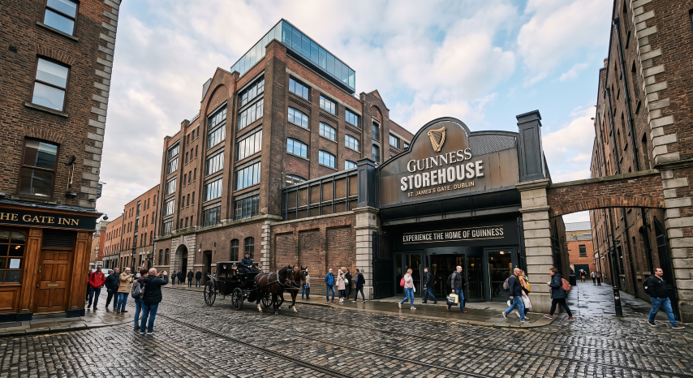
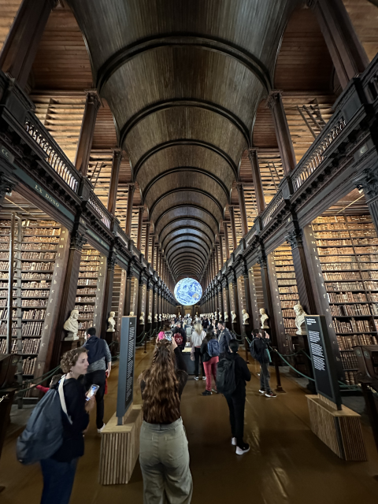
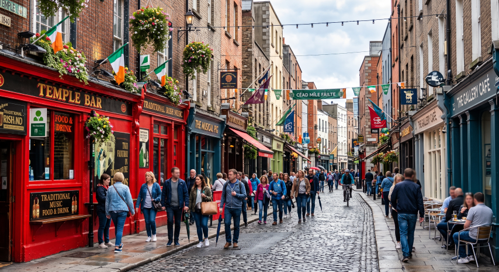
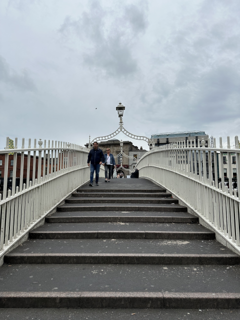

💡 都柏林獨旅行前懶人包 💡 Dublin Solo Travel Quick Info
章節導覽Table of Contents
🛑 都柏林走跳工具箱 🛑 Dublin Utility Box
🎫 景點通票：Go City Dublin Pass Go City: Dublin Pass
如果要在有限時間內參觀精華，或計畫深度走訪各大博物館，推薦預訂 Go City: Dublin Pass。涵蓋健力士啤酒展覽館、聖派翠克大教堂、權力遊戲之旅等核心景點，任選 3 景點 59€ 起，省時又省錢。 For exploring core highlights efficiently, the Go City: Dublin Pass is highly recommended. It covers the Guinness Storehouse, St Patrick's Cathedral, Game of Thrones tours, and more. From 59€ for 3 choices, saving you time and money.
🧳 退房後不想拖行李去酒吧？ Don't want to drag luggage to pubs?
都柏林的酒吧區與老街石板路對行李箱極度不友善！退房後推薦使用 Radical Storage，將行李寄放在周邊合法的在地雜貨店或咖啡館，解放雙手輕鬆喝一杯。
🎁 讀者專屬：結帳輸入優惠碼 EUROPESOLO 現省 10%！
Dublin's pub quarters and cobbled streets are a nightmare for suitcases! After checking out, we recommend using Radical Storage to leave your luggage at a nearby local shop. Free your hands for a pint!
🎁 Reader Exclusive: Use code EUROPESOLO at checkout to save 10%!
🗺️ 必做體驗：都柏林 8 大歷史文化景點 🗺️ Must-Do: 8 Cultural Spots in Dublin
這座被譽為「文學之都」的城市，將凱爾特傳奇、醇厚黑啤酒與宏偉的歌德式建築完美揉合。以下為你整理獨旅必訪的 8 大精華地標： This "City of Literature" perfectly blends Celtic legends, rich stout, and magnificent Gothic architecture. Here are 8 essential landmarks for your solo trip:
1. 凱勒梅堡監獄 (Kilmainham Gaol) 1. Kilmainham Gaol
這裡是愛爾蘭爭取獨立歷史中最重要的見證地。監獄陰冷的石牆內曾關押過無數革命領袖，親臨現場感受維多利亞時代監獄的肅殺氣氛，能深刻體會愛爾蘭建國的血淚史。 The most significant site witnessing Ireland's struggle for independence. Many revolutionary leaders were imprisoned here. Experiencing the stark Victorian prison atmosphere offers profound insights into Irish history.
💭 溫馨提醒：歷史迷絕不能錯過！但由於極度熱門，官方導覽票經常一票難求，強烈建議提早數週預訂！ 💭 Tip: A must for history buffs! Tickets sell out fast, so book weeks in advance!

2. 健力士啤酒展覽館 (Guinness Storehouse) 2. Guinness Storehouse
七層樓高的巨型酒杯建築，帶來視覺與味覺的雙重震撼。從黑麥烘焙、水質過濾到傳奇廣告展示，最後在頂樓的 Gravity Bar 憑門票兌換一杯擁有完美泡沫的黑啤酒，俯瞰都柏林全景。 A 7-story giant pint glass building offering visual and tasteful awe. Learn about the brewing process and legendary ads, and finish at the rooftop Gravity Bar with a complimentary perfect pint overlooking Dublin.
💭 溫馨提醒：建議提早預訂以避開排隊人潮，不喝酒的旅客也可以將門票兌換成無酒精飲料唷！ 💭 Tip: Book in advance to skip lines. Non-drinkers can exchange the ticket for a non-alcoholic beverage!

3. 三一學院與凱爾之書 3. Trinity College & Book of Kells
愛爾蘭最古老的大學。付費參觀被譽為愛爾蘭國寶的《凱爾之書》手抄本，並走進電影《哈利波特》靈感來源之一的「長圖書館 (Long Room)」，被頂天立地的古老藏書所包圍。 Ireland's oldest university. Pay to see the Book of Kells, an illuminated manuscript, and walk into the breathtaking Long Room library, which inspired scenes in Harry Potter.
💭 Bryan 親測：就在三一學院裡。大推給所有喜歡凱爾特的夥伴們！能欣賞到極美麗的凱爾特藝術與古色古香的圖書館，還有與這些美麗藝術的互動展廳唷～如果不花錢，也能在百年校園散步感受學術氛圍。 💭 Bryan's take: Highly recommended for Celtic lovers! You can appreciate beautiful Celtic art and the antique library. Even if you don't pay for the book, walking around the historic campus is highly rewarding.
4. 聖派翠克大教堂 (St Patrick's Cathedral) 4. St Patrick's Cathedral
愛爾蘭最大的教堂，建於西元 1191 年。華麗的哥德式尖塔與內部精美的彩繪玻璃窗令人屏息。《格列佛遊記》作者喬納森·斯威夫特也長眠於此，周圍的公園是絕佳的休憩地點。 Ireland's largest church, founded in 1191. Its Gothic spire and stained glass windows are breathtaking. Jonathan Swift, author of Gulliver's Travels, is buried here. The surrounding park is a great rest spot.
💭 溫馨提醒：入內參觀需購票，如果使用 Go City Dublin Pass 則可以直接免費進入。 💭 Tip: Entry requires a ticket, but it's fully covered if you use the Go City Dublin Pass.

5. 坦普爾酒吧區 (Temple Bar) 5. Temple Bar
都柏林夜生活與文化的心臟地帶。紅色的磚牆、喧鬧的石板路與無數掛滿花籃的傳統 Pub 構成了最經典的愛爾蘭畫面。 The heart of Dublin's cultural and nightlife quarter. Red brick walls, cobbled streets, and countless traditional pubs adorned with hanging baskets create the classic Irish scene.
💭 Bryan 親測：適合想體驗凱爾特飲酒文化的人們，來杯健力士啤酒配上傳統凱爾特現場演奏才是絕配。不過這裡消費較高，想省錢的朋友可以找此區以外的在地酒吧唷～ 💭 Bryan's take: Perfect for experiencing Celtic pub culture. A Guinness paired with live trad music is unmatched. Prices are high here, so budget-conscious folks might want to explore local pubs outside this area.
6. 都柏林城堡 (Dublin Castle) 6. Dublin Castle
曾是英國統治愛爾蘭 700 多年來的行政中心。這裡沒有一般刻板印象中的防禦性高塔，而更像是一座華麗的王宮邸。參觀奢華的國家公寓（State Apartments）能一窺歷史權力的更迭。 Once the seat of British rule in Ireland for over 700 years. Instead of a defensive fortress, it resembles a lavish palace. Touring the opulent State Apartments offers a glimpse into the shifting tides of historical power.
💭 溫馨提醒：城堡周邊的廣場可以免費散步拍照，要進入內部參觀房間才需要購票。 💭 Tip: You can walk around the castle courtyard for free. Tickets are only required to enter the State Apartments.

7. 半便士橋 (The Ha'penny Bridge) 7. The Ha'penny Bridge
建於 1816 年，是都柏林橫跨利菲河（River Liffey）最古老的行人鐵橋。之所以得名，是因為早年過橋需要繳納「半便士」的過路費。白色的優雅鑄鐵拱形，是都柏林最經典的明信片視角。 Built in 1816, it is the oldest pedestrian bridge crossing the River Liffey in Dublin. Named because locals originally had to pay a halfpenny toll to cross. Its elegant white cast-iron arch is a classic postcard view.
💭 Bryan 親測：免費入內。能拍到最美的都柏林河岸，不如買個東西坐在河畔的長椅上享受一番吧～ 💭 Bryan's take: Free! Captures the most beautiful Dublin riverside view. Why not grab a snack and enjoy it on a riverside bench?
8. 基督教會座堂 (Christ Church Cathedral) 8. Christ Church Cathedral
建立於維京時代，是都柏林最古老的建築之一。除了宏偉的石造外觀與精緻的連通天橋外，底下擁有不列顛群島最大的中世紀地下墓穴（Crypt），散發著迷人而神秘的中世紀氣息。 Founded in the Viking era, it's one of Dublin's oldest buildings. Aside from the grand stone exterior and the iconic bridge, it boasts the largest medieval crypt in the British Isles, offering a mysterious medieval atmosphere.
💭 溫馨提醒：強烈推薦走到地下墓穴參觀，裡面甚至展示了傳奇的「貓與老鼠」木乃伊！ 💭 Tip: Highly recommend visiting the crypt below, which famously houses the mummified remains of a cat and a rat!
🏔️ 都柏林近郊與跨城一日遊 🏔️ Dublin Day Tours & Getaways
📍 自行前往：火車與巴士近郊推薦 DIY: Train & Bus Coastal Routes
想遠離市區喧囂，可以搭乘 DART 郊區火車或跨城長途巴士，輕鬆解鎖愛爾蘭絕美的懸崖海岸與北愛爾蘭歷史： Escape the city hustle by taking the DART train or intercity buses to unlock Ireland's stunning coastal cliffs and Northern Irish history:
霍斯 (Howth) 海鮮漁村Howth Fishing Village
⏱️ 25min海邊、步道絕美推薦！必走 Cliff Walk 懸崖健行，沿著海崖俯瞰愛爾蘭海，並在港口品嚐最新鮮的炸魚薯條。 Beautiful coastal trails! Don't miss the Cliff Walk overlooking the Irish Sea, and enjoy fresh fish & chips by the harbor.
貝爾法斯特 (Belfast)Belfast
⏱️ ~2.5hr跨國（北愛爾蘭屬英國）歷史名城。必訪鐵達尼號紀念館與宏偉的市政廳，體驗截然不同的英倫風情。 Cross the border to Northern Ireland (UK). Must visit the Titanic Belfast and the grand City Hall to experience the British vibe.
格倫達洛 (Glendalough)Glendalough
⏱️ 1hr 20min位於威克洛山脈國家公園深處的「雙湖谷」，有著中世紀修道院遺跡與幽靜的湖泊步道，是愛爾蘭最寧靜神聖的自然秘境。 The "Valley of the Two Lakes" deep in Wicklow Mountains National Park. Home to medieval monastic ruins and serene lake trails, it's Ireland's most tranquil nature retreat.
🚐 懶人推薦：Bryan 筆記嚴選一日團 Lazy Way: Bryan's Pick for Day Tours
都柏林的私人一日團發展得非常成熟。如果不想費神研究大眾運輸，想要以首都為基地玩遍愛爾蘭大景點，參加一日團是最安全且高效率的獨旅首選： Dublin's day tour market is highly mature. If you want to base yourself in the capital and see Ireland's top spots without worrying about transport, these tours are the safest and most efficient choice:
莫赫斷崖、布倫及高威一日遊 Cliffs of Moher, Burren & Galway Tour
巨人堤道與貝爾法斯特鐵達尼博物館 Giant's Causeway & Titanic Belfast
基爾肯尼、威克洛和格蘭達洛之旅 Kilkenny, Wicklow & Glendalough
🎉 都柏林慶典：三大必訪文藝狂歡時刻 🎉 Annual Festivals: 3 Must-Visit Dublin Events
融入在地狂歡與文學氛圍Dive into Local Revelry & Literature
愛爾蘭人極度熱愛節慶，不論是全國染成綠色的瘋狂遊行，還是致敬大文豪的知性講座。獨旅者在這些節日中極易在熱絡的氛圍裡與來自世界各地的旅客交上朋友。 The Irish love their festivals, from crazy green parades to intellectual talks honoring literary giants. Solo travelers will find it incredibly easy to mingle and make friends during these festive times.
愛爾蘭最大、最具代表性的全國慶典。整個都柏林會陷入綠色海洋，街道上充滿盛大遊行與音樂會。獨旅人士可以輕鬆穿梭在酒吧中，感受熱鬧非凡的氛圍。 Ireland's largest national festival. Dublin turns into a sea of green with grand parades and concerts. Solo travelers can easily bar-hop and soak in the vibrant atmosphere.
都柏林是聯合國教科文組織認證的「文學之都」。文學節會在廣場舉辦戶外朗誦與講座。對獨旅者來說是個能坐在草皮上享受沉浸式文藝時光的舒適活動。 Dublin is a UNESCO City of Literature. The festival hosts outdoor readings and talks. It's a cozy event for solo travelers to sit on the grass and enjoy literary moments.
為了紀念《德古拉》的愛爾蘭籍作者而舉辦。充滿哥德風、恐怖文學導覽與光影秀。市區各處的萬聖節裝飾與沉浸式活動讓萬聖節的獨旅絕不孤單。 Celebrating the Irish author of Dracula. Filled with Gothic vibes, horror lit tours, and light shows. The citywide decorations ensure a thrilling Halloween solo trip.
🚆 都柏林交通全攻略：機場聯外與市區移動建議 🚆 Transport Guide: Airport & City Transit
📍 從都柏林機場出發往返市區 (DUB) From Dublin Airport to City Center (DUB)
Dublin Express 巴士Dublin Express Bus
🛫 路線🛫 RouteTerminal 1/2 <-> City Center (市區停靠點多)
⏱️ 時間⏱️ Time約 30 分鐘，班距非常頻繁~30 mins, highly frequent
💶 價格💶 Price單程 9€ - 10€Single 9€ - 10€
Aircoach 巴士 (700/700X)Aircoach (700/700X)
🛫 路線🛫 RouteTerminal 1/2 <-> City Center (市區停靠點多)
⏱️ 時間⏱️ Time約 40 分鐘，班距 15-20 分鐘~40 mins, every 15-20 mins
💶 價格💶 Price單程 9€Single 9€
公車 (41 / 41B / 33號等)City Bus (41/41B/33)
TFI🛫 路線🛫 RouteAirport Parking <-> O‘Connell St Upper, stop 277
⏱️ 時間⏱️ Time約 30 分鐘~30 mins
💶 價格💶 Price15.1€ (現場售票機買票)15.1€ (Buy at ticket machine)
💳 市區移動必備：TFI Leap Card 與電子票 Essential for City Transit: TFI Leap Card & App
由 Transport For Ireland (TFI) 統籌的都柏林交通包含了 Bus（公車）、Luas（輕軌）、DART（郊區火車）。你可以選擇使用自動售票機買紙本票、下載 TFI Go App 買電子票，但強烈建議購買 TFI Leap Card（類似台灣悠遊卡），享有多重折扣與便利轉乘！ ⚠️ 提醒：TFI 官方網站會阻擋台灣 IP 存取，若欲直接造訪查詢最新資訊，請開啟 VPN 連線至歐洲地區瀏覽。 ⚠️ Note: The official TFI website may block certain foreign IP addresses. Please use a VPN connected to Europe if you experience access issues. Dublin's transit via Transport For Ireland (TFI) includes Buses, Luas (trams), and DART (trains). You can buy paper tickets, use the TFI Go App, but the TFI Leap Card (a top-up smartcard) is highly recommended for discounts and easy transfers!
📍 都柏林三大跨城交通樞紐 Dublin's 3 Main Intercity Hubs
Connolly 火車站Connolly Station
主要負責往北及往東岸的火車班次。若要搭乘 InterCity 前往貝爾法斯特 (Belfast)，或是搭乘 DART 郊區火車前往霍斯 (Howth)、馬拉海德 (Malahide)、布雷與達基 (Bray & Dalkey) 等海岸線，都在此站搭乘。 Handles North/Eastbound trains. Depart here for Belfast (InterCity) or take the DART to coastal towns like Howth, Malahide, Bray, and Dalkey.
Heuston 火車站Heuston Station
主要負責往南及往西岸的長途火車班次。若計畫前往高威 (Galway)、基爾肯尼 (Kilkenny) 或科克 (Cork) 等愛爾蘭大城，多由本站發車。 Handles South/Westbound intercity trains. Depart here for major Irish cities like Galway, Kilkenny, or Cork.
Busáras 巴士總站Busáras Bus Terminal
都柏林最大的中央客運站，緊鄰 Connolly 車站。各大跨城長途巴士幾乎都在此發車，是窮遊背包客前往其他城鎮的好樞紐。 Dublin's central bus station, right next to Connolly. The hub for intercity routes—a backpacker's best friend.
🛏️ 住宿建議：都柏林精選安全高性價比青旅 🛏️ Accommodation: Safe & High-Value Dublin Hostels
| 🛏️ 住宿飯店 / 青旅🛏️ Hostel/Hotel | 🔗 預訂連結🔗 Booking Links | 💰 平均房價參考💰 Est. Price | ⭐ 旅客評分⭐ Rating | 💡 站長為何推薦💡 Why Recommend |
|---|---|---|---|---|
| Generator Dublin 知名連鎖潮流青旅Trendy Chain Hostel 📍 Google Maps | EUR 30 - 60 / 晚night |
約 8.1 / 10 位置優越，社交性強 ~ 8.1 / 10 Great location & social |
位於 Jameson 酒廠旁邊，步行至市區極近。公共空間有撞球桌與酒吧，非常適合結交新朋友。 Next to Jameson Distillery, walking distance to city center. Features a pool table and bar, great for meeting people. | |
| Latroupe Jacobs Inn 高隱私膠囊床位High Privacy Pods 📍 Google Maps | EUR 40 - 75 / 晚night |
約 8.5 / 10 交通樞紐，設施現代 ~ 8.5 / 10 Transport hub, modern |
鄰近 Connolly 火車站與 Busáras 巴士總站，轉乘跨城交通無敵方便。膠囊式床位隱私絕佳！ Near Connolly Station and Busáras, unbeatable for intercity transit. Pod-style beds offer superb privacy! | |
| Clink I Lár 市中心核心地段City Center Core 📍 Google Maps | EUR 35 - 65 / 晚night |
約 8.4 / 10 新開幕，機能無敵 ~ 8.4 / 10 New & ultra convenient |
出門即是最熱鬧的商業區，步行即可抵達各大核心景點。設備新穎乾淨，單身旅客也能感到安心。 Steps away from the busiest commercial area and core sights. Clean and modern facilities, very safe for solo travelers. | |
| Gardiner House Hostel 經典維多利亞風格Classic Victorian Style 📍 Google Maps | EUR 25 - 50 / 晚night |
約 8.6 / 10 歷史建築改建，提供早餐 ~ 8.6 / 10 Historic building, breakfast inc. |
200 年歷史建築改建，內部充滿復古風情。提供免費早餐，並有可愛的後花園可以放鬆，性價比高。 Converted 200-year-old building with retro charm. Offers free breakfast and a lovely back garden. Great value. | |
| Garden Lane Backpackers 溫馨家庭式青旅Cozy Home-style Hostel 📍 Google Maps | EUR 30 - 55 / 晚night |
約 8.8 / 10 安靜街區，員工親切 ~ 8.8 / 10 Quiet street, friendly staff |
位於較安靜的基督教會座堂區域。床鋪舒適，廚房設備齊全，氛圍像家一樣溫馨，適合想避開喧囂的旅人。 Located in the quieter Christ Church area. Comfortable beds, fully equipped kitchen, home-like vibe. Perfect for avoiding the noise. |
🍝 愛爾蘭美食指南：國民燉肉與傳統酒吧餐 🍝 Irish Food Guide: Hearty Stews & Pub Grub
🍽️ 都柏林必吃愛爾蘭經典 6 大在地美食 6 Classic Irish Foods You Must Try
愛爾蘭料理以豐富的馬鈴薯、優質肉類與海鮮聞名，更懂得利用舉世聞名的黑啤酒入菜。以下是來到都柏林絕對不能錯過的暖胃美食： Irish cuisine is famous for abundant potatoes, quality meats, seafood, and cooking with their world-renowned stout. Here are the hearty foods you can't miss:
🎒 獨旅實戰：都柏林友好餐廳與平價清單 Solo Guide: Friendly & Budget Restaurants
愛爾蘭的物價雖高，但街頭總藏有美味的驚喜與溫馨的酒吧。以下精選 5 間對單人用餐極度包容，或是能幫你大省預算的餐飲首選： While Ireland is pricey, streets hide tasty surprises and cozy pubs. Here are 5 spots highly tolerant of solo diners or great for budget saving:
| 🍴 餐廳 / 酒吧🍴 Restaurant / Pub | 💰 價格水平💰 Price Level | 📍 交通位置📍 Location | 💡 站長為何推薦💡 Why Recommend |
|---|---|---|---|
| The Cobblestone 📍 在地圖開啟Open in Maps |
中等價位Mid 傳統在地音樂酒吧Local Trad Pub |
Smithfield 廣場附近Near Smithfield Sq.
|
🛡️ 獨旅友善：極高Solo Friendly: Very High
愛爾蘭當地人狂推的酒吧！可以喝到極佳的健力士啤酒，每天都有最道地的凱爾特現場音樂演奏，獨自一人坐在吧檯也很容易跟在地人聊開，氣氛超棒！ Highly recommended by locals! Great Guinness and authentic live Celtic music daily. Sitting solo at the bar makes it easy to chat with locals. Awesome vibe! |
| Lovinspoon 📍 在地圖開啟Open in Maps |
中等價位Mid 高CP值早午餐High-value Brunch |
Frederick St NorthFrederick St N
|
🛡️ 獨旅友善：高Solo Friendly: High
提供極具份量且道地的 Full Irish Breakfast。不僅價格合理，環境也非常溫馨，店員友善，適合一個人慢慢享受早晨時光。 Serves huge, authentic Full Irish Breakfasts. Reasonably priced with a cozy environment and friendly staff. Perfect for a slow solo morning. |
| Tang (Dawson Street) 📍 在地圖開啟Open in Maps |
低到中價位Low-Mid 健康輕食咖啡館Healthy Cafe |
三一學院南方South of Trinity
|
🛡️ 獨旅友善：極高Solo Friendly: Very High
連日大魚大肉後的救星！主打健康的沙拉碗與捲餅，充滿地中海風味。店面明亮，吧檯座位對單人旅客十分友善，外帶去聖史蒂芬綠地吃也很推薦。 A savior after days of heavy meals! Focuses on healthy salad bowls and wraps with Mediterranean flavors. Bar seating is great for solos, or grab takeout to St Stephen's Green. |
| Beanhive Coffee 📍 在地圖開啟Open in Maps |
低到中價位Low-Mid 精品咖啡與拉花Specialty Coffee & Art |
Dawson StreetDawson Street
|
🛡️ 獨旅友善：高Solo Friendly: High
網路上討論度極高的咖啡廳，咖啡上的拉花藝術令人驚豔。雖然店面小小的，但充滿活力的氛圍很適合獨旅者中途停靠休息。 Highly praised online, known for stunning latte art. The shop is small but energetic, making it a perfect pit stop for solo travelers to rest. |
| Soup Dragon 📍 在地圖開啟Open in Maps |
低價位Low 熱湯專賣外帶店Takeout Soup Shop |
Capel StreetCapel Street
|
🛡️ 獨旅友善：極高Solo Friendly: Very High
愛爾蘭天氣陰冷時的救贖！每天提供多種口味的手工濃湯與燉菜，附上新鮮麵包。價格極度親民，買上一碗帶走，好吃又暖胃。 A salvation on chilly Irish days! Daily fresh handmade soups and stews with bread. Very budget-friendly. Grab a bowl to go; it's delicious and warming. |
🇮🇪 都柏林獨旅生存避雷箱 Dublin Survival Box
電壓與插座規格Voltage & Plugs
愛爾蘭使用與英國相同的 G型三腳方頭插座（電壓為 230V）。這點與歐洲大陸（如德法義等地的雙圓孔 C/F 型）完全不同！ Ireland uses the same UK Type G (3-pin square) plugs as the UK (230V). This is completely different from mainland Europe (Type C/F).
如果你帶了從歐洲大陸買的單一轉接頭，或是台灣常見的萬國轉接頭，出發前請「務必檢查是否有英國規格」，否則手機會無法充電而造成恐慌。 If you bring a continental Europe adapter or a universal one, double-check that it has the UK configuration, otherwise you'll be left unable to charge your phone!
舉手攔公車Hail the Bus!
與部分歐洲城市公車到站會自動停靠不同，在都柏林搭公車時，看到公車來了，你必須在站牌處主動向司機「舉手示意（Signal）」。 Unlike some European cities where buses stop automatically, in Dublin, you must actively raise your hand to signal the driver when your bus approaches.
如果車上沒有人按鈴下車、站牌也沒有其他人招手，司機可能直接咻的一聲開過去。晚上等車請盡量站在有光源的地方讓司機看見你。 If no one rings the bell to get off and no one waves at the stop, the driver will blow right past. At night, stand near a light source so they can see you.
特殊的傳統 Pub 文化Traditional Pub Culture
歐洲南部的夜生活通常很晚才開始，但愛爾蘭的傳統 Pub 不僅僅是喝酒的地方，它更是社區的起居室。下午三、四點走進傳統酒吧，常常就能聽到現場樂團。 Southern European nightlife starts late, but an Irish Pub is more like a community living room. Walk into a traditional pub at 3 or 4 PM, and you'll often catch a live band.
這種下午的音樂聚會稱為「Trad Session」。老老少少一邊喝著黑啤酒一邊聊天，氛圍溫馨接地氣。獨旅者可以大方坐在吧檯，享受被歡樂包圍的感覺！ These afternoon music gatherings are called "Trad Sessions". People of all ages chat over stout in a warm, grounded vibe. Solo travelers should confidently sit at the bar and soak in the joy!

Bryan | Europe Solo Guide
「獨旅不是孤單，而是給自己一場完整的自由。」 "Solo travel is not about being lonely; it's about giving yourself complete freedom."
熱愛穿梭在歐洲老城區的石板路上與壯麗群山間。目前已獨自走訪 41 個歐洲國家，致力於將複雜的交通、住宿與隱藏景點，轉化為有溫度的獨旅攻略。希望這篇文章能幫你省下找資料的時間，把精力留給旅途中的美好。 I love wandering through cobblestone alleys of European old towns and majestic mountains. Having visited 41 European countries solo, I aim to transform complex transit, lodging, and hidden gems into warm solo guides. I hope this article saves you time so you can spend your energy on the beauty of the journey.